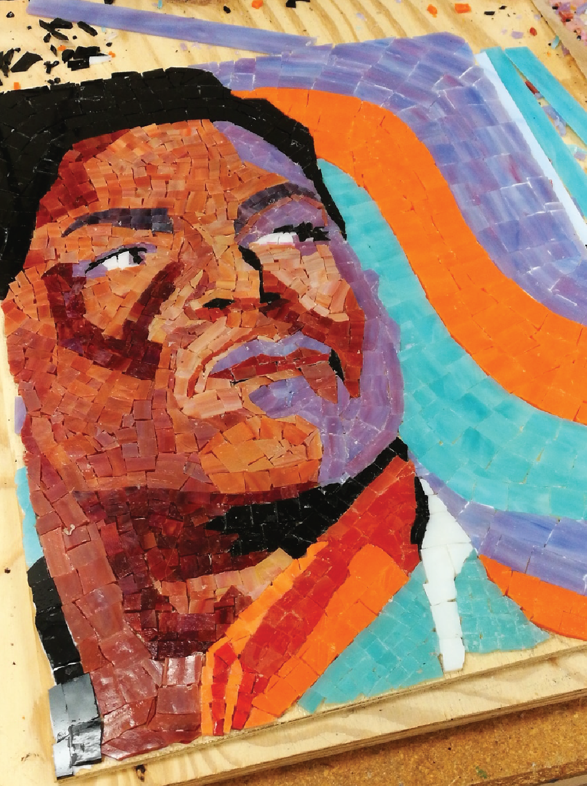
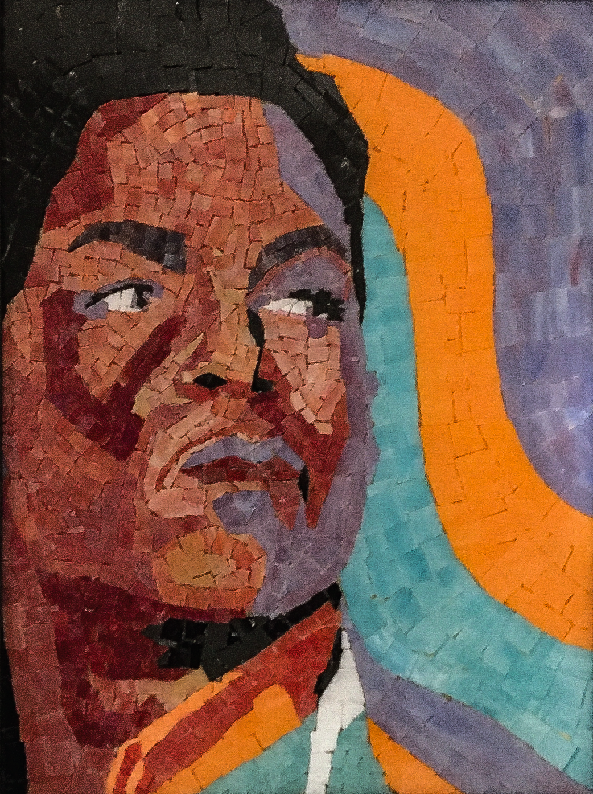

CRAFTS
I warned you I liked Prince.
This is a mosaic work made with different pieces of glass on a wood surface.
Fun Fact: it's easy to cut yourself while working with glass, so you better have some cute panda band-aids close to you.


I warned you I liked Prince.
This is a mosaic work made with different pieces of glass on a wood surface.
Fun Fact: it's easy to cut yourself while working with glass, so you better have some cute panda band-aids close to you.